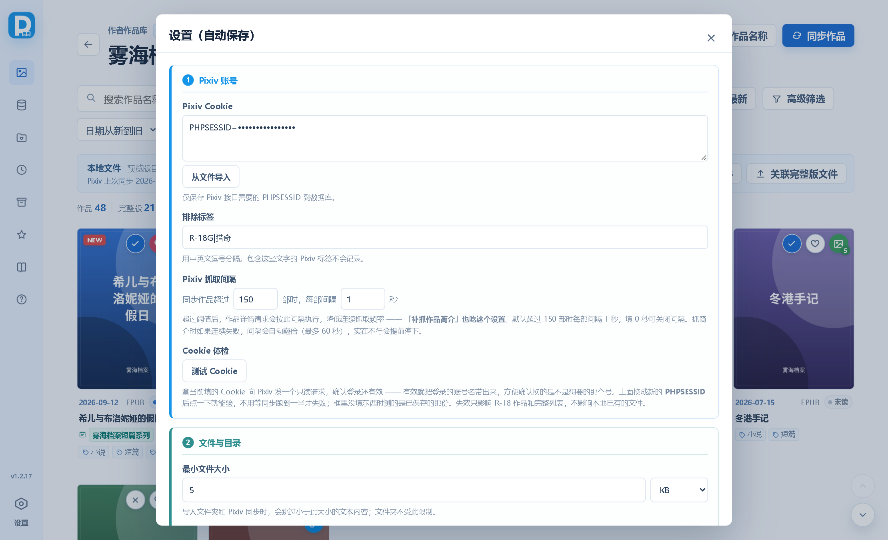
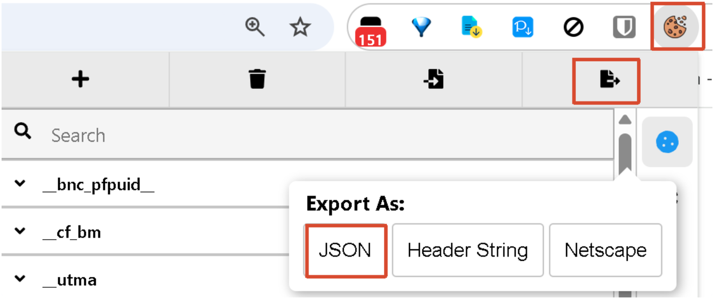
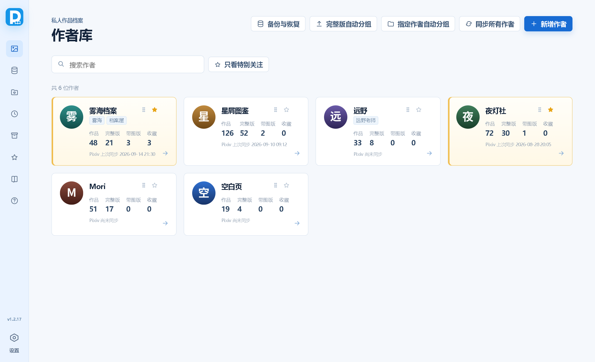
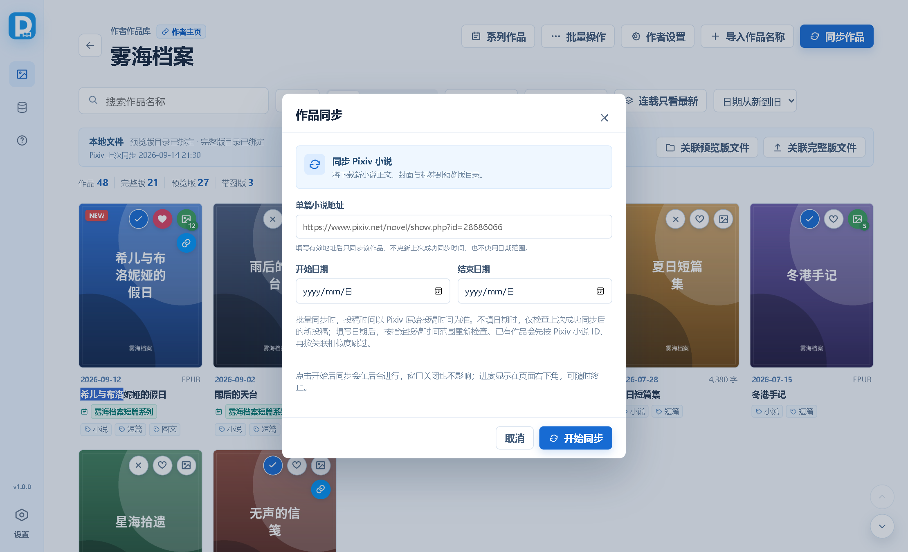
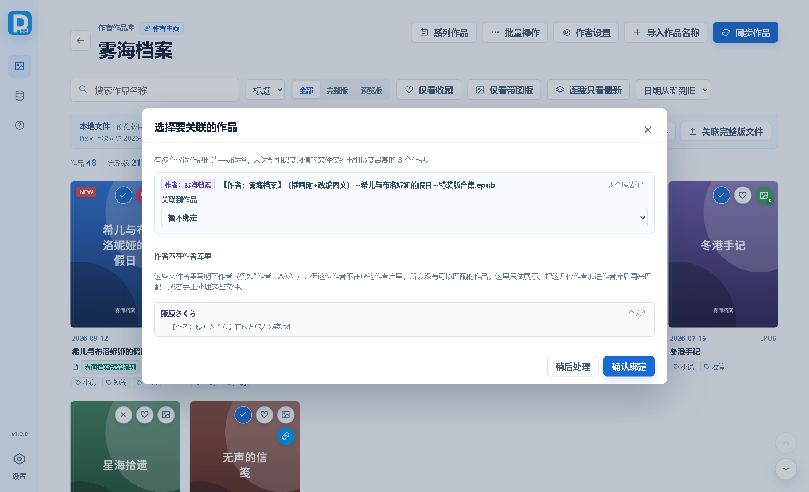
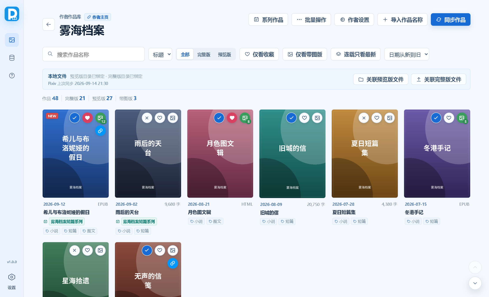
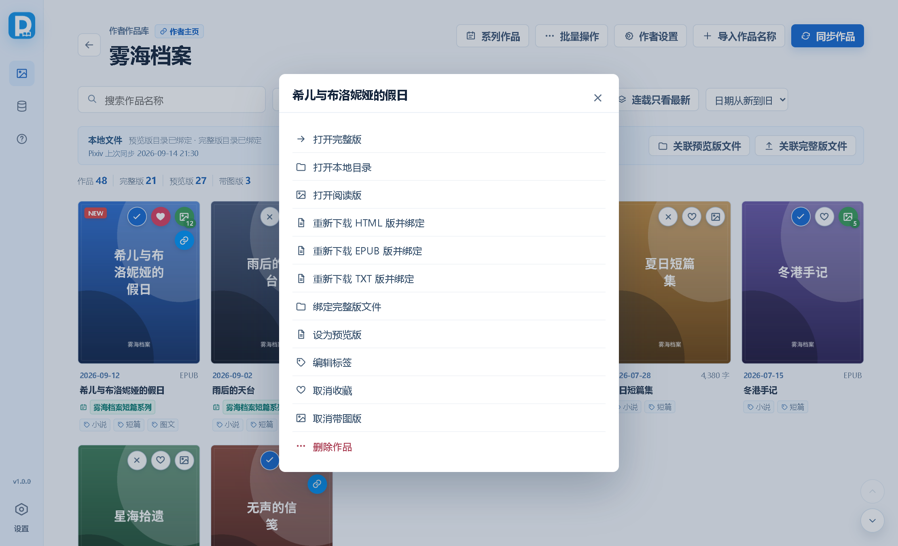
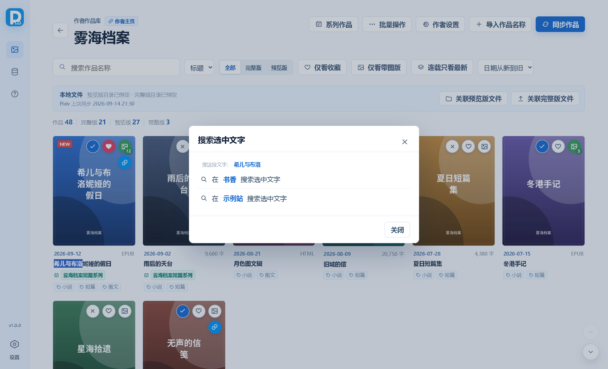
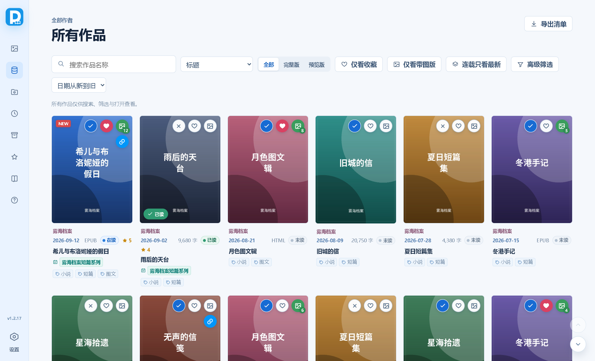

v1.0.1 · Windows
Pixiv小说下载管理器
Windows 本地作品管理软件：按作者管理 Pixiv 小说的预览版与完整版文件，记录购买状态、封面、标签、系列和收藏。
01安装与启动
免安装，绿色便携。
- 到 Releases 下载最新版 exe，放到一个固定的文件夹里（别放桌面，容易误删）。
- 双击 exe 就能用。首次启动会在 exe 同级目录创建
data 文件夹，数据库和封面都存在里面。
- 整份迁移到别的电脑时，把 exe 所在的整个文件夹一起复制过去，数据跟着走。
系统要求：Windows 10 / 11，需要 Microsoft Edge WebView2 Runtime（Windows 11 通常自带；缺了程序会提示）。
软件不会碰你原来的小说文件 —— 它只记录「哪个作品对应磁盘上哪个文件」，导出、清理这类会动磁盘的操作都有二次确认。
装好后第一件事是填 Pixiv Cookie（见 第 3 节）—— 没有它什么都同步不下来。
02首次设置
左下角齿轮进入；改完自动保存，没有保存按钮。

设置按用途分成 6 块，每块左边有一条自己的色带，标题前有序号。
- 1 · Pixiv 账号
- 2 · 文件与目录
- 3 · 匹配与关联
- 4 · 下载与图文
- 5 · 搜索网站
- 6 · 维护与数据
最少要填这几项：
- 预览版 / 完整版默认目录：新建作者时用来生成作者目录。打开「自动创建作者目录」后，保存作者就会按作者名自动建目录并绑定。
- Pixiv Cookie（必填）：没填就同步不了，导出方法见下一节。程序只保存 Pixiv 接口需要的
PHPSESSID。
- 最小文件大小：导入文件夹和同步时，小于这个值的 txt 会被跳过，防止把空文件当成作品。
- 关联相似度：文件名和作品标题不完全相同时，达到这个分数才自动关联。默认 70，嫌严就调低。
设置没有保存按钮。停手半秒就自动写进数据库，页脚会显示「已自动保存 21:35:02」。填到一半、通不过校验的值不会存进去，页脚会红字写明原因（例如网址少了 =），改对就自动存。
03获取 Pixiv Cookie
最要紧的一步 —— 没有 Cookie，同步基本跑不起来。
Cookie 等同于登录凭据，必须先有它才能同步。作品列表、正文、封面、R-18 内容全都得凭登录身份去取：没填或已失效时，同步会失败，或者只拿到一小部分作品。
它通常 1–2 周后过期，同步失败时重新导出一份换上即可。另外 —— 不要发给别人，也别把 Cookie 截图公开。
方法
- 用 Chrome / Edge 打开 www.pixiv.net，登录你自己的账号（要取 R-18 内容必须是登录状态）。
- 装一个能导出 Cookie 的浏览器扩展。下图用的是「导入cookie」，其他同类扩展（Cookie-Editor、EditThisCookie 等）操作也差不多。
- 点扩展图标打开 Cookie 列表，找到
www.pixiv.net 那一组。
- 点导出按钮，弹出来的 Export As 里选 JSON。
- 把导出的全部文本粘进「设置 → 1 · Pixiv 账号 → Pixiv Cookie」；也可以点旁边的「从文件导入」直接选那个
.json 文件。改完自动保存，没有保存按钮。

三个红框就是要点的地方：扩展图标 → 导出按钮 → Export As 选 JSON。图里那排 __cf_bm、__utma 之类的条目不用管，导出的是整组。
粘贴格式：JSON 和 Header String 都收，别选 Netscape
- 推荐 JSON：扩展导出的原始数组，程序按
domain / name / value 三个字段解析。
- Header String 也能用：就是
PHPSESSID=xxxx; other=yyyy 那种一行文本，从浏览器开发者工具 Network → 请求头 → Cookie 直接复制的那串也属于这种。
- 不要选 Netscape：那是制表符分隔的格式，程序认不出来。
整段内容都粘进去没关系，程序只挑出 Pixiv 登录要用的 PHPSESSID 存进数据库，其余读完即弃，不会外传。要是整段里找不到 PHPSESSID（比如贴错了别的站点的 Cookie），会直接报「Cookie 中未找到 Pixiv 登录所需的 PHPSESSID」并且不保存。
程序每次启动都会自动验一次 Cookie，失效或没填会弹窗提示（列明「无法同步敏感作品 / 拿不到完整作品列表 / 同步可能失败」），点「前往设置」直接跳到填写处。
04作者库
一切从这里开始 —— 作品是按作者归档的。

每张作者卡显示作品 / 完整版 / 带图版 / 收藏的统计，点卡片进入该作者的作品库。
- 新增作者：填 Pixiv 作者主页后点「同步作者信息」，会自动读取作者名和头像。配好默认目录并打开「自动创建作者目录」时，保存就会自动建好预览版、完整版两个目录。
- 只看特别关注：把常看的作者点星星标上，一键筛出来。
- 拖动排序：每张卡名字右边有一个六点拖动按钮，按住约 0.2 秒卡片会被「拿起来」——一张跟着鼠标走的浮层卡片出现在最上层（微微倾斜、带投影），原位置留下半透明虚位；挪到别处时其余卡片会顺势滑开让位，松手放下就排好了，顺序会存进库里。
轻轻点一下（不到 0.2 秒）不会触发拖动，也不会误进作品库。没拖过的作者按名字排，并一律排在拖过的作者后面。
05同步 Pixiv 小说
正文、封面、投稿日期、标签、系列一次拿下来。

在作者作品库点「作品同步」打开。填日期可以按原始投稿时间限定范围。
- 批量同步：填开始 / 结束日期时按 Pixiv 原始投稿日期筛选；两个日期都留空则只检查上次成功同步之后的新投稿。同步会显示进度，可以随时「终止同步」。
- 同步单篇：在「单篇小说地址」里填
https://www.pixiv.net/novel/show.php?id=28686066 这样的地址，就只同步这一篇，不读作者主页列表，也不更新「上次成功同步」时间。
- 已有文件不会重下：同步时如果预览版目录里已经有对应文件，会直接关联上，不重复下载。
- 限速：「设置 → Pixiv 抓取间隔」默认是同步超过 150 篇时每篇间隔 1 秒，可按需调整。
预览版还是完整版？
同步时读作品简介来判定：简介里含「全文」（「全文放出」除外）或含「购买」的，判为预览版；其余判为完整版。判定只在同步那一刻做一次，之后改规则不会回溯老作品。
一个作品只占一边。判为完整版的，正文、封面、配图和图文版整份放进完整版目录；判为预览版的整份留在预览版目录。软件不会在两边各放一份副本。
图文小说（正文带插画）
有些小说把插画直接插在正文里。同步这类作品时，配图会一起下载到正文同名的 {标题}_images 文件夹并按顺序编号，正文里的占位符也会被替换成「[插图 3：标题_images/003.jpg]」这样的指引；同时另外生成一份排好版的阅读版（封面、章节、注音、插图都在），直接看就行。
- 阅读版格式在「设置 → 同步作品时图文小说自动保存为」里选：HTML（默认，双击用浏览器打开）或 EPUB（适合推到手机 / 阅读器）。只生成选中的那一种。
- 配图画质在「设置 → 配图画质」里选：默认 1200 宽（每张约 1 MB），也可以要作者上传的原图。
- 作品卡右下角三个点菜单里有两个下载入口：「重新下载 HTML 版并绑定」「重新下载 EPUB 版并绑定」——点哪个出哪种，跟设置无关。它会重抓一次最新正文、补齐没下过的配图、重新打包，然后把作品绑定到这份阅读版上。重复点也安全，配图不会重复下载。
- 进入「批量操作」勾选作品后，可以批量「补下配图」或「重新下载 EPUB 版并绑定」，带进度条。
06关联本地文件
把磁盘上已有的文件跟作品对上号。

需要手动选择时，默认不勾选任何作品 —— 相似度达标只标「推荐」，勾哪几个由你决定。
- 关联预览版文件：扫描预览版目录第一层。已有作品未关联会自动绑定；库里没有的预览版文件会新增为作品并绑定。
- 关联完整版文件：先选匹配方式（见下），然后扫描完整版目录第一层。已经关联过的文件直接跳过，封面图和配图文件夹不参与。
- 手动绑定：点作品卡右下角三个点 →「绑定完整版文件」，直接指定一个本地文件。
- 批量设为完整版：进「批量操作」勾选作品，把预览版文件（含配图文件夹和图文版）移到完整版目录并自动绑定，预览版目录不再保留副本。
- 能参与关联的只有文本（txt / md）、电子书（epub / mobi / azw3 / pdf…）和 HTML；封面图与
{标题}_images 配图文件夹一律不参与。
匹配角色 / 匹配标题
点「关联完整版文件」或「完整版自动分组」后，先让你选这次用哪种方式：
匹配角色
从文件名里抽角色名，和作品标题里的角色名取交集。只要有一个对得上就算候选，不管标题像不像、也不看相似度阈值。适合文件名只有「作者名 + 角色名」的情况。这个模式下不会自动绑定。
匹配标题
按文件名与作品标题的相似度匹配，达到「关联相似度」就自动绑定。两者的相似度算法见下方。
两种方式都遵守同一条规则：文件名里写明了作者（例如 【作者：AAA】甘雨同人.txt），就只在这位作者的作品里匹配。如果写的作者还没进作者库，这些文件会按作者名分组列在弹窗最下方，方便你先去把作者加进来再回来匹配。
相似度是怎么算的
一侧是作品标题，另一侧是本地文件名。两边各自归一化（去掉扩展名、去掉开头的日期、只留字母数字并小写）后，取最长的一段连续相同文字，再除以两边里更长的那一边的字数：
- 标题
ABCD、文件名 AB → 2 ÷ 4 = 50%
- 标题
ABCD、文件名 CD → 也是 50%（跳字的 AD 不算连续，只有 25%）
- 标题
ABC、文件名 ABCDEF → 3 ÷ 6 = 50%，文件名多出来的字同样扣分
谁的名字长就按谁算，两边多出来的内容都会拉低分数。所以文件名里带日期、「完整版」这类前后缀时会掉分，掉到阈值以下就不会自动关联 —— 想宽松些，把「关联相似度」调低一点。
设置里的「匹配作品名长度」只在标题比文件名长时有用：填十几二十个字就只拿标题开头那一截去比，分母跟着变小、分数上来。文件名比标题长时，分母恒为文件名长度，这个设置不起作用。
07作品卡与右键菜单
日常操作基本都在这张卡上。

封面第一排是状态 / 收藏 / 带图版三个徽标，第二排右边是「打开作品网址」；右下角三个点是「更多操作」。
- 只有封面图和标题能打开文件，卡片其他位置（日期、标签）点了没反应。所以标题可以放心用鼠标拖动选中、双击选词，再 Ctrl+C 复制，不会误触打开。
- 作品卡右上角的带图角标显示这个作品有几张配图。下载过配图就是实际张数；作品绑定的是 EPUB / HTML 时软件会直接数文件里的插图（封面不算），所以外面带进来的电子书也有角标。老作品可以到「设置 → 维护与数据 → 阅读版图片数」点「立即重算」补一遍。
- 链接徽标（第二排）只在作品有 Pixiv 作品 ID 时出现，点它用默认浏览器打开这篇作品的 Pixiv 页面，回去看原帖、看评论都方便。
三个点菜单

打开阅读版、三个「重新下载并绑定」、绑定 / 改绑文件、编辑标签、删除都在这里。
- 「打开本地目录」会在资源管理器里打开作品所在目录，并顺手把这份作品文件选中（绑的是目录就直接打开目录），不用自己在一堆文件里找。
- 三个「重新下载 … 版并绑定」都会从 Pixiv 重抓一次正文，然后把作品绑定到新文件上。原来在预览版还是完整版那一侧，绑完还留在那一侧。TXT 版会把正文里的插图写成
[插图 N：{正文名}_images/001.jpg] 的指引。没有 Pixiv 作品 ID 的作品抓不到，会提示先同步。
右键：两种菜单

在卡片上选中文字再右键，弹出的是一份搜索菜单，把你选中的那截文字丢到配好的网站上搜。
- 选中文字后右键 → 搜索菜单。菜单顶上先亮一行「搜这段文字：xxx」，下面按配置顺序列出「在
书香 搜索选中文字」这样的入口，点一下就用默认浏览器打开那个站的搜索页。
- 没选中文字时右键 → 直接开「编辑标签」弹窗；它底部的「打开本地目录」同上。
配置搜索网站
- 打开「设置 → 搜索网站」，点「添加网站」。
- 左边填网站名（比如
书香），右边填它的搜索页网址。规矩很简单：最后一个 = 后面就是搜索词的位置。
- 网址填得不对也没关系，程序会自动清洗并在那一行下面写明改了什么：去掉
searchid（那是某一次搜索的缓存编号，换了关键词结果也不会变）、把关键词参数挪到最末一位，其余参数一个都不动。
搜索词会自动做 URL 编码，中文、空格、& 都能正确带过去。
08浏览、搜索与排序
「所有作品」汇总全部作者，作者作品库只管一位作者。

「所有作品」把全部作者的作品汇总在一起，卡片上带作者名，作者名可以直接点。
- 点作者名直接跳到那位作者的作品库（会清掉当前的搜索词和筛选，落到干净的列表）；跳进去以后左上角返回箭头会回到「所有作品」，并把离开前的搜索词原样还原。
- 封面第一排的状态 / 收藏 / 带图版徽标在这里也能点，和作者作品库共用同一份数据 —— 在这里收藏完，用作者作品库的「仅看收藏」就能筛出来。
- 「仅看收藏」在作者作品库和「所有作品」里分别保存，互不影响。
- 搜索范围可以切成标题或标签。
- 排序可选：日期从新到旧 / 从旧到新、名称 A-Z、字数从多到少。字数这条把 EPUB、HTML 这类阅读版按配图张数排，并且整体排在 TXT 前面（图文作品通常就是最想先看的），TXT 之间再按字数排。
- 批量操作支持全选、删除、设为完整版、设为带图版、补下配图；所有删除都有二次确认。
09系列作品
点「系列作品」查看当前作者的系列卡片，进入系列后按 Pixiv 系列序号显示作品，序号不可重复。右键作品卡可以加入已有系列、退出系列或修改系列序号。
从作者作品库、所有作品或系列总览进入系列详情时，返回按钮都会回到你原来那一页。
10清理多余预览版
「设置 → 维护与数据 → 清理多余预览版」
同一篇作品一旦拿到完整版，预览版就没必要留着了（一个作品只占一边）。这个功能先给你看数量再动手：先只扫不删，报出「有几篇同时挂着预览版和完整版」「其中几篇的完整版文件确认在磁盘上、可以安全清」，你确认后才真清。完整版文件找不到的作品一律跳过，绝不冒险。
清理时不会暴力删文件：
- 预览版正文与它的阅读版（
.html / .epub）送进 Windows 回收站，和资源管理器里按 Delete 一个效果，右键能还原；
- 预览版目录里的配图目录，完整版目录下还没有就搬到完整版目录去（否则清掉会断图），已经有了就一起送回收站；
- 封面跟着搬到完整版目录并更新记录，避免老目录清掉后封面整片失效。
个别文件送回收站失败（比如正被别的程序占用）会原样留着，这类作品的库记录也不改，下次还能再清一次。
11备份与迁移
- 「设置 → 维护与数据」里可以导出 / 恢复数据库备份。
- 便携版的数据在 exe 同级的
data 文件夹。迁移到另一台电脑时，请一并备份该目录以及预览版、完整版文件目录。
- 数据库备份不等于文件备份 —— 只还原数据库不会把小说文件带回来。
12软件自动更新
查版本、下新版、换掉旧的 —— 都在程序里做完。
程序每次启动都会去发布页问一句「现在最新是哪个版本」。有新的会在左下角把版本号变成 ↑ v1.0.1 这样的按钮并弹一条提示，不会自己偷偷下载或替换。点那个按钮，或者「设置 → 6 维护与数据 → 软件更新 → 检查更新」，就能打开更新弹窗。
更新弹窗里直接显示这一版改了什么
打开更新弹窗时会顺手把发布页上的更新说明抓回来，直接显示在弹窗里（可滚动，不用再自己开浏览器）。说明是从发布页的公开订阅源取的，不占用 GitHub 接口额度，也只在你确实查到新版时才去取一次 —— 平时启动查版本不会多带这个请求。
如果那一版没写更新说明、或者当下取不到，弹窗会直说取不到，下面留着「打开发布页」按钮，点一下就能在浏览器里看。
点「立即更新」之后发生什么
- 新版 exe 下到程序所在的文件夹，文件名跟发布页上一致（
PixivNovelDownloader-v1.0.1.exe）。下载先落到 .part，确认是完整的可执行程序才改名 —— 下到一半、或者下回来是镜像的错误页，都不会被当成新版本。
- 下载完自动启动新版，程序重启。
- 新版启动时发现上一个版本的 exe 还躺在旁边，把它移进 Windows 回收站（可以还原），并提示一句「已把旧版本文件移入回收站」。
你的作品和数据库都不在 exe 里。数据在同级的 data 文件夹，换 exe 不碰它 —— 更新完作者、作品、收藏、设置全都在。
打不开 GitHub 怎么办
国内直连 github.com 常常不通，所以程序会自动换加速镜像重试：先直连，失败后按顺序试内置镜像（ghproxy.net、gh-proxy.com、ghfast.top、gh.xxooo.cf），哪条通就用哪条。查版本和下载整条链路都走这套回退，不需要你操作。
镜像失效是常事。万一全都不通，去「设置 → 6 维护与数据 → 更新加速镜像」自己换一批 —— 一行一个，地址会直接接在 https://github.com/... 前面，改完自动保存、立刻生效，不用等出新版本。点「恢复默认」可以填回内置的那几条。
几个常见情况
- 下载慢：进度条会显示当前走的是哪条线路，耐心等或者换个镜像。
- 不想让它联网查版本：把「启动时自动检查新版本」的勾去掉，之后只在你手动点「检查更新」时才查。
- 不想被某个版本反复提醒：更新弹窗里点「忽略此版本」，同一个版本不再提示，出了新的照旧提醒。
- 自动下载失败：弹窗里有「打开发布页」和「镜像打开发布页」，手动下来放进程序文件夹替换掉旧 exe 也一样，下次启动照样会把旧的收进回收站。
程序所在的文件夹要能写入。放在 C:\Program Files 里会被系统挡下来，这时程序会直接提示你把程序挪到桌面、文档这类有写入权限的位置 —— 本来就是免安装的便携版，放哪儿都行。
13常见问题
同步失败 / 提示未登录
先看有没有 Cookie —— 没有 Cookie 是同步不了任何东西的，第一次用必须先去 第 3 节 导一份填上。已经填过还失败，基本是过期了：Pixiv 的 Cookie 通常 1–2 周失效，按同一套步骤重新导一份覆盖掉即可。下载 R-18 内容必须用已登录账号的 Cookie。
Cookie 粘进去了，却提示「未找到 PHPSESSID」
说明这段内容里确实没有 Pixiv 的登录凭据，常见两种原因：导出时格式选了 Netscape（制表符分隔，程序认不出）——改选 JSON 或 Header String；或者打开 www.pixiv.net 时没登录，导出的 Cookie 里自然没有 PHPSESSID。登录后重导一次就好。
点了作品没反应
这是有意的：只有封面图和标题能打开文件，卡片其他位置点了不会响应，这样标题才能放心拖选复制。另外作品如果既没绑预览版也没绑完整版文件，也没有可打开的目标。
「关联完整版文件」扫不到我那些文件
几个常见原因：只扫目录第一层，放在子文件夹里的不会被扫到；封面图和 {标题}_images 配图文件夹不参与关联；已经关联过的文件会被跳过。都不对的话，用作品卡三个点里的「绑定完整版文件」手动指定。
文件名和标题差不多，为什么没自动关联上？
相似度的分母取「标题和文件名里更长的那一边」，所以文件名带日期、带「完整版」「第二部」这类前后缀时会明显掉分。要么把「关联相似度」调低一点，要么把文件名改干净些。也可以直接用「匹配角色」或手动绑定。
为什么「匹配作品名长度」调了没效果？
它只在标题比文件名长时生效。文件名更长时，分母恒等于文件名长度，截短标题只会让分子变小、分数不变。
字数排序里，电子书怎么跑到 TXT 前面了？
「字数从多到少」对 EPUB / HTML 这类阅读版是按配图张数排的（它们没法简单数正文汉字），并且整体排在 TXT 前面 —— 图文作品通常最想先看。TXT 之间才按字数排。
换电脑 / 重装系统后数据还在吗？
把 exe 所在的整个文件夹复制过去就在。数据在 exe 同级的 data 文件夹里，不写注册表、不写系统目录，卸载就是删文件夹。
软件会自动删我的文件吗？
不会。清除类操作都要你点确认，而且「清理多余预览版」是送进Windows 回收站而不是直接删除，误清了可以从回收站还原。
更新失败怎么办？
看它提示哪一句：「程序所在文件夹不能写入」就把程序挪到桌面或文档这类位置再更新（便携版放哪儿都能跑）；「所有下载源都失败了」说明内置镜像这会儿都不通，去「设置 → 6 维护与数据 → 更新加速镜像」换几条，或者点弹窗里的「打开发布页」手动下载替换。详见 第 12 节。
更新弹窗里没显示更新说明？
两种可能：那一版发布时确实没写更新说明，或者说明这会儿取不回来（网络 / 镜像的问题）。都不影响更新本身，点弹窗里的「打开发布页」在浏览器里就能看到这一版改了什么。详见 第 12 节。